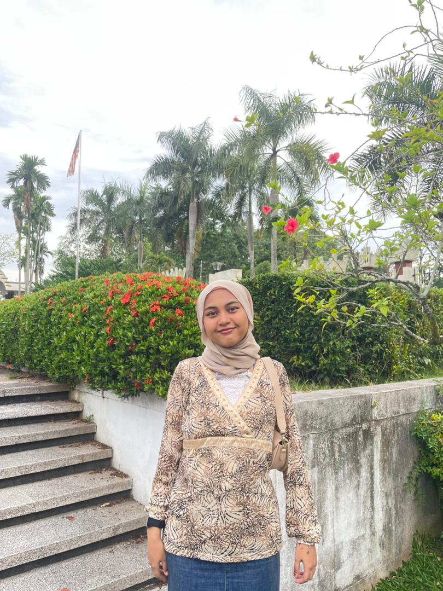
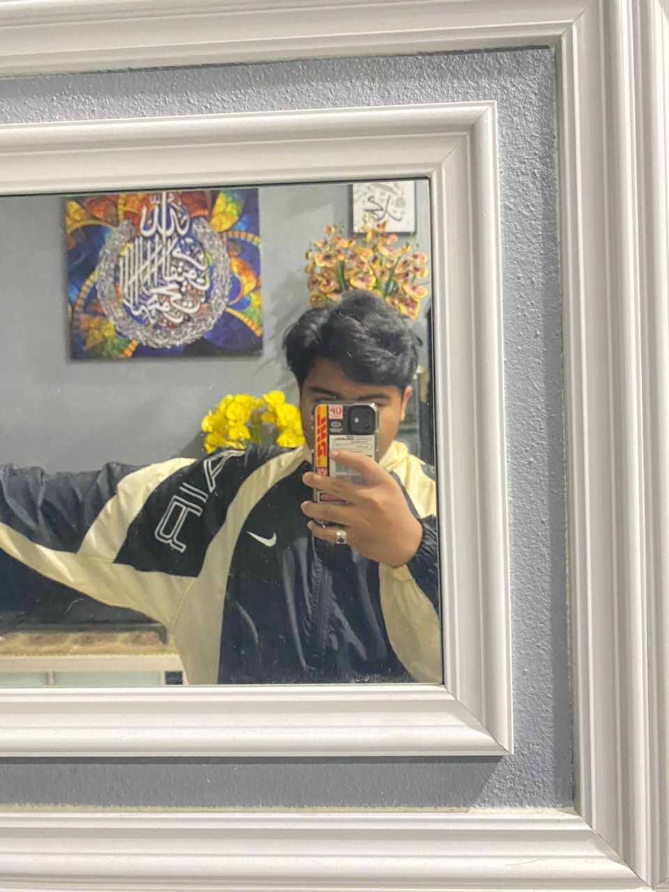
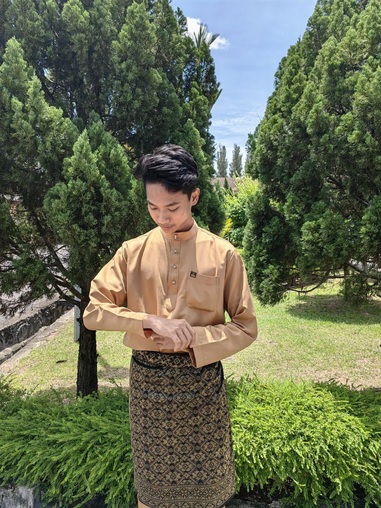
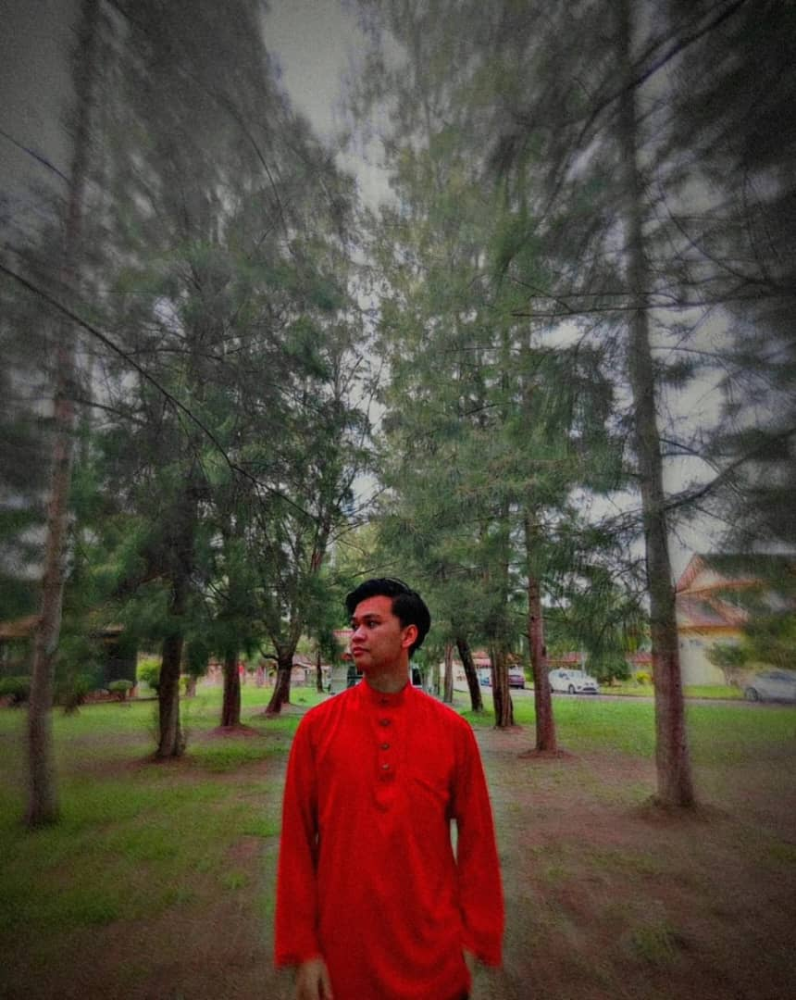

| No | Student Name | Reg. No. |
|---|---|---|
| 1 | SAIDATUL DAMIA ATHIRAH BT MOHD ZULKEFLY 😇 | 10DDT22F1041 |
| 2 | MUHD FARID NURHELMI BIN MOHD HASBI 😂 | 10DDT22F1070 |
| 3 | MUHD IRFAN FAREEZ BIN AZEEMI 😘 | 10DDT22F1065 |
| 4 | HAMBALI BIN MUHD FARIS 😎 | 10DDT22F1086 |
1. SAIDATUL DAMIA ATHIRAH BINTI MOHAMAD ZULKEFLY
2. MUHAMAD FARID NURHELMI BIN MOHAMAD HASBI
3. MUHAMAD IRFAN FAREEZ BIN AZEEMI
4. HAMBALI BIN MOHAMAD FARIS
1. Web Designer
A web designer creates the visual elements of a website, including the layout, color scheme, typography, and graphics. They use design software such as Adobe Photoshop and Sketch to create mockups of website designs and work closely with web developers to ensure that the final website looks and functions as intended. Web designers must have an eye for detail and be skilled in using design principles to create visually appealing and user-friendly websites.
2.Software Engineering
Software engineering is the discipline and practice that involves designing, developing, testing, and maintaining software to ensure it meets user requirements, functions effectively, and can be efficiently managed, encompassing aspects such as requirements analysis, software design, implementation, testing, configuration management, project management, maintenance, and quality engineering.
3.Software Engineering
Software engineering is the discipline and practice that involves designing, developing, testing, and maintaining software to ensure it meets user requirements, functions effectively, and can be efficiently managed, encompassing aspects such as requirements analysis, software design, implementation, testing, configuration management, project management, maintenance, and quality engineering.
4.Software Engineering
Software engineering is the discipline and practice that involves designing, developing, testing, and maintaining software to ensure it meets user requirements, functions effectively, and can be efficiently managed, encompassing aspects such as requirements analysis, software design, implementation, testing, configuration management, project management, maintenance, and quality engineering.